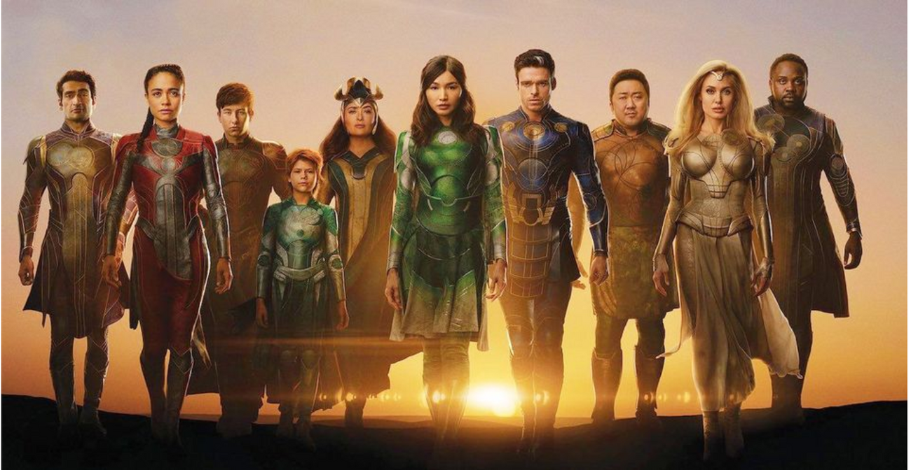

รายชื่อ 20 หนังฟอร์มยักษ์น่าดูปี 2021 ที่คุณไม่ควรพลาด!
ปี 2020 ที่โลกต้องเผชิญหน้ากับโคโรนาไวรัส เป็นปีที่เลวร้ายของวงการบันเทิง คอนเสิร์ตถูกห้ามจัด โรงภาพยนตร์มีทั้งปิดบริการ และเปิดฉายแต่ก็จำกัดที่นั่ง จนหนังใหญ่ๆ มากมายต้องเลื่อนฉายด้วยความยากจะเก็บรายได้ให้คุ้มทุนสร้าง โดยโยกมาเป็นปีนี้ ถึงกระนั้นก็ยังไม่ชัวร์ว่าโปรแกรมเด็ดๆ เรื่องต่างๆ จะย้ายวันอีกไหม เมื่อโควิด-19 ยังแร๊ง… อย่างที่เห็น แต่ถ้าไม่ นี่คือหนังที่ไม่ควรพลาดหากมีโอกาสได้ชมในโรงภาพยนตร์
The Beatles: Get Back “สี่เต่าทองในมือของผู้กำกับ The Lord of the Rings”
หลังงานมหากาพย์อย่าง The Lord of the Rings และ the Hobbits ปีเตอร์ แจ็คสัน ดูกำลังสนุกกับงานสารคดี หลังความสำเร็จของ They Shall Not Grow Old หนังสารคดีสงครามโลกครั้งที่ 1 เขาจะพาไปพบชีวิตในวันท้ายๆ ของ The Beatles ที่มีฟุตเตจในช่วงปี 1969 ของวง ซึ่งไม่เคยเห็นที่ไหนมาก่อนให้ชมกันเต็มอิ่ม และแน่นอนฉากแสดงดนตรีบนดาดฟ้าบริษัทแอปเปิล คอร์ปส์
ไม่ควรพลาดเพราะ: ริงโก สตาร์ร์ บอกว่า เป็นหนังที่ “นำเสนอภาพจุดจบของเดอะ บีเทิลส์ ได้ ‘จริง’ กว่า หนัง Let It Be เมื่อปี 1970”
คะแนน IMDb : 9.1 / 10
Black Widow “จากตัวละครสมทบ ที่ได้นำเดี่ยวขึ้นจอครั้งแรก”

ถึงจะเป็นตัวละครสมทบ แต่นาทาชา โรมานอฟก็กลายเป็นที่จดจำทุกครั้งที่ขึ้นจอ ซึ่งก็ต้องให้เครดิตกับการแสดงของสคาร์เล็ทท์ โยแฮนส์สันด้วย และกับหนังนำเดี่ยวเรื่องแรก เราจะได้รู้ความเป็นมาของเธอก่อนเป็นหนึ่งในทีมอเวนเจอร์ โดยเรื่องราวจะเกิดขึ้นหลังเหตุการณ์ใน Captain America: Civil War ที่นอกจากโยแฮนส์สัน ยังมีสาวเก่งรุ่นเก๋า – ราเชล ไวสซ์ และรุ่นใหม่ - ฟลอเรนซ์ พิวจ์ ร่วมจอ
ไม่ควรพลาดเพราะ: นี่คือหนังเรื่องแรกของจักรวาลภาพยนตร์มาร์เวลเฟสที่สี่
คะแนน IMDb : 6.7 / 10
Candyman “การกลับมาของนักล่ามือตะขอ”
เป็น ‘ภาคต่อทางจิตวิญญาณ’ กับหนังต้นฉบับที่เป็นงานสยองคลาสสิกของยุค ‘90s ที่ว่าด้วยฆาตกรในโครงการหมู่บ้านจัดสรรที่ชิคาโก โดยเล่าเรื่องต่อจากที่ทิ้งเอาไว้ ในหนังปี 1992 จากโครงการบ้านจัดสรรกลายมาเป็นคอนโด ที่ศิลปินซึ่งเคยถูกหลอนโดยเจ้าแคนดีแมนย้ายเข้ามา เขาก็พบว่าเจ้านักฆ่ามือตะขอยังไม่หายไปไหน
ไม่ควรพลาดเพราะ: นี่คือหนังเรื่องแรกของจักรวาลภาพยนตร์มาร์เวลเฟสที่สี่
คะแนน IMDb : 5.9 / 10
The Conjuring: The Devil Made Me Do It “ล่าท้าผี ที่ไม่มีเจมส์ วาน”
หนังเรื่องที่สามของ The Conjuring แต่เป็นหนังเรื่องที่ 8 ในจักรวาลนักล่าท้าผี ที่ยังคงวนเวียนอยู่กับสองผัวเมียวอร์เรน – เอ็ดกับลอร์เรน ซึ่งแพทริค วิลสันกับเวรา ฟาร์มิกายังมารับบทเดิม หนนี้จะเป็นเรื่องคดีความที่เกิดขึ้นจริงของ อาร์น เชเยนน์ จอห์นสัน ที่แย้งข้อหาฆาตกรรมด้วยการบอกว่า ขณะก่อเหตุเขาอยู่สภาพถูกสิง!!!
ไม่ควรพลาดเพราะ: เป็นครั้งแรกที่เจมส์ วาน ไม่กำกับ และไปอยู่ในสถานะยานแม่ โดยไมเคิล ชาเวส ที่ทำ The Curse Of La Llorona ได้หลอนเอาเรื่องทำหน้าที่แทน ซึ่งน่าสนใจมากว่าเขาจะเอาอยู่ไหม
คะแนน IMDb : 6.3 / 10
Cruella “ตัวร้ายจากการ์ตูนดิสนีย์ ที่กลายมาเป็นตัวเอก”
ติดลมบนได้ตังค์จาก Maleficent ดิสนีย์เลยหยิบครูเอลลา เดอวิลล์ ตัวร้ายคลาสสิคอีกรายมาทำหนัง ให้เอ็มมา สโตนมาเล่นเป็นนาง (เอก) ร้ายเจ้าของชื่อเรื่อง เรื่องราวก็ขุดคุ้ยถึงความเป็นมาในชีวิต ที่ทำให้ตัวละครรายนี้เป็นอย่างที่เห็นใน 101 Dalmatians โดยมีเอ็มมา ธอมป์สันร่วมแสดง
ไม่ควรพลาดเพราะ: ผู้กำกับคือ เครก จิลเลสพี ที่ทำให้เอ็มมาได้ชิงออสการ์จาก I, Tonya และเล่าเรื่องได้ ‘มันส์’ มาก แล้วกับความเปรี้ยวของครูเอลลา เขาน่าจะทำให้เธอ ‘แสบ’ และ ‘แซ่บ’ กว่าที่เคย
คะแนน IMDb : 7.4 / 10
Dune “มหากาพย์ไซ-ไฟ ในมือผู้กำกับมากวิสัยทัศน์”
ด้วยเครดิตจากงานไซ-ไฟอย่าง Arrival และ Blade Runner 2049 การจับ Dune นวนิยายมหากาพย์ไซ-ไฟของแฟรงค์ เฮอร์เบิร์ท มาทำของเดนิส วิลล์เนิฟว์ ดูน่าจะได้คนที่ใช่กับงานที่ถูก เรื่องว่าใหญ่แล้ว ทีมนักแสดงก็ไม่แพ้กันมีทิโมธี ชาลาเมท์รับบทนำ ร่วมด้วยเซนดายา, ออสการ์ ไอแซ็ค, จอช โบรลิน และเจสัน โมมัว
ไม่ควรพลาดเพราะ: หนังถูกวางไว้เป็นต้นทาง ที่จะมีภาคต่อ และแตกหน่อไปเป็นซีรีส์ บวกความเป็นนิยายคลาสสิค แม้จะถูกทำมาหลายรอบแบบไม่ค่อยเวิร์ค หนนี้ในมือวิลล์นีฟว์น่าจะออกมาดีสักที
คะแนน IMDb : 8.1 / 10
Deep Water “ผู้กำกับจากยุค ‘80s ที่กลับมาพร้อมนิยายของผู้เขียน The Talented Mr. Ripley”
คู่สามี-ภรรยาที่ความรักเหี่ยวเฉา ฝ่ายชายทำหูหนวกตาบอดต่อการนอกใจของภรรยา เพราะไม่อยากหย่า แต่พอฝ่ายหนึ่งหาทางเขี่ยอีกฝ่าย มันก็เกิด ‘สปาร์ค จอย’ ขึ้นมา เบน อัฟเฟล็คกัอะนา เดอะ อาร์มาส มาเล่นผัวเมียคู่นี้ที่คงสปาร์คแรงไไม่น้อย จนเป็นข่าวตามสื่อเมาท์มอยระหว่างถ่ายทำ
ไม่ควรพลาดเพราะ: นักแสดงร้อนทั้งหน้ากล้องหลังกล้อง หนังยังสร้างจากนิยายของผู้ประพันธ์ The Talented Mr. Ripley และ Carol แถมเป็นงานกำกับเรื่องแรกของแอเดรียน ลีน เจ้าของเครดิตในหนังร้อนๆ อย่าง Fatal Attraction, Indecent Proposal, Lolita และ Unfaithful
คะแนน IMDb : - / 10
The Eternals “หนังซูเปอร์ฮีโร ในมือผู้กำกับหนังล่ารางวัล”

งานส่งจักรวาลภาพยนตร์มาร์เวลไปสู่ยุคใหม่ ตัวเอกเป็นพวกชีวิตเกือบอมตะ เป็นเผ่าพันธ์ยอดมนุษย์ยุคโบราณ ถูกสร้างขึ้นเมื่อล้านๆ ปีก่อน และซ่อนตัวในโลกเป็นพันๆ ปี มีเดอะ ดิเวียนท์ เป็นตัวร้ายสุดแสบที่เปรียบได้กับธานอสคนใหม่ พวกเขามีหน้าตาอย่าง แอนเจลีนา โจลี, เจ็มมา ชาน, ริชาร์ด แม็ดเดน, แบร์รี โคแกห์น, คูเมล นานจิอานิ
ไม่ควรพลาดเพราะ: หนังกำกับโดย โคลอี เจ้า ผู้กำกับหนังล่ารางวัลเรื่องสำคัญของปี Nomadland ที่บางทีในตอนออกฉาย หนังอาจได้ชื่อว่าเป็นผลงานของผู้กำกับออสการ์ก็เป็นได้
คะแนน IMDb : 6.5 / 10
Fast and Furious 9 “ศึกสายเลือด ตระกูลซิ่ง”
จากหนังอาชญากรรมรถซิ่ง หนังมาไกลมาก เพราะกลายเป็นหนังขบวนการสายลับ ฉากแอ็คชัน ภารกิจก็อลังการเกินความเป็นมนุษย์ ในเรื่องนี้ จู่ๆ ดอมของวิน ดีเซล ก็มีน้องชาย (จอห์น ซีนา) ที่หนังตอนก่อนๆ ไม่เคยแย้มเลยว่ามี แถมฮาน (ซุน กัง) ที่ตายไปเห็นๆ ในตอน Tokyo Drift ก็โผล่มาเฉย หนังได้จัสติน ลิน ที่สร้างทิศทางใหม่ให้หนังชุดนี้กลับมากำกับ และลากยาวไปถึงภาคสุดท้าย
ไม่ควรพลาดเพราะ: นอกจากน้องชายที่ไม่รู้มาจากไหน คนที่ชัดว่าตายแต่กลับมา หนังต้องมีเซอร์ไพรส์แบบเป็นไปได้ไงหว่าซุกไว้อีกแน่ และต้องโผล่มาแบบเอามันส์กันเต็มที่แน่ๆ
คะแนน IMDb : 5.2 / 10
Ghostbusters: Afterlife “ขบวนการกำจัดผี ฉบับอัพเดท ของแท้”
ลืม Ghostbusters หญิงล้วนไปซะ เพราะเจ้าเก่าของแท้มาแล้ว กับปฏิบัติการล่าผีที่เมืองเล็กๆ ในโอคลาโฮมา ซึ่งนักแสดงต้นฉบับที่ยังมีลมหายใจ บิลล์ เมอร์เรย์, แดน แอครอยด์ และเออร์นี ฮัดสันกลับมาครบ พร้อมหน้าใหม่ แคร์รี คูน, ฟินน์ โวล์ฟฮาร์ด, แม็คเคนนา เกรซ และพอล รัดด์ มาร่วมเสริมทีม มีเจสัน ไรท์แมนลูกชายผู้กำกับฉบับออริจินัลมากุมบังเหียน
ไม่ควรพลาดเพราะ: จากการล่าผีในเมืองกรุง หนนี้จะว่ากันที่บ้านนอก ที่บรรยากาศชวนทำให้นึกถึง Stranger Things โดยเฉพาะการวางตัวละครรุ่นใหม่ๆ เอาไว้ด้วย
คะแนน IMDb : 7.3 / 10
In the Heights “หนังเพลง ที่มีดีมากกว่าแค่เพลงดีๆ แต่ยังมีเรื่องราวที่น่าสนใจ”
ลิน-มานูเอล มิแรนดา เป็นที่รู้จักจากละครเพลง Hamilton แต่เขามีผลงานมาก่อนหน้าแล้ว และ In the Heights ก็คือหนึ่งในจำนวนนั้น กับเรื่องราวของชนชั้นแรงงานหลายเชื้อชาติในละแวกที่เขาเติบโต ที่มีทั้งเรื่องช่องว่างระหว่างวัย, ความแตกต่างทางวัฒนธรรม, พวกผู้อพยพ และความรัก ทำให้หนังมีมิติหลากหลาย ตัวเพลงก็เช่นกัน มีแร็ป, มีซัลซา ที่มาทั้งแบบเดี่ยวๆ และผสมผสาน
ไม่ควรพลาดเพราะ: จอน เอ็ม. ชูคือผู้กำกับที่คุ้นมือกับหนังเพลงดี จากผลงานอย่าง หนัง Step Up 2-3, หนังสารคดีคอนเสิร์ตของจัสติน บีเบอร์
คะแนน IMDb : 7.3 / 10
The King’s Man “เรื่องเล่าย้อนอดีตของสุภาพบุรุษสายลับ”
มาถึงเรื่องที่สามของเหล่าสายลับคิงส์แมน หนังจะพาย้อนกลับไปหาจุดกำเนิดและความเป็นมาขององค์กรสุภาพบุรุษสายลับข้ามชาติ ที่พาไปไกลถึงต้นยุค 1900s ช่วงเวลาที่อาชญากรที่เลวร้ายที่สุด กับเผด็จการที่เหี้ยมโหดที่สุดจับมือกัน เพื่อก่อให้เกิดสงคราม ที่จะหยุดทุกสงครามที่มี ซึ่งจะทำให้ผู้คนนับล้านเสียชีวิต
ไม่ควรพลาดเพราะ: มันสมองของหนัง Kingsman สองเรื่องแรก แม็ทธิว วอห์นยังไม่ไปไหน ขณะที่นักแสดงก็ได้เรล์ฟ ไฟนส์ มานำทีม ส่วนตัวร้ายก็คือ รัสปูติน ที่รับบทโดยรีห์ส ไอแฟนส์
คะแนน IMDb : 6.7 / 10
King Richard “เบื้องหลังความสำเร็จของพี่น้องตระกูลวิลเลียมส์”
การเดินทางสู่ความสำเร็จของสองพี่น้องวีนัสและเซเรนา วิลเลียมส์ เป็นเรื่องที่น่าสนใจ โดยเฉพาะเมื่อทั้งคู่เป็นนักเทนนิสระดับสูงได้ยาวนานหลายปี และนี่คือเรื่องราวเบื้องหลังความสำเร็จของทั้งคู่ ซึ่งมีริชาร์ด วิลเลียมส์ ผู้พ่อเป็นแรงกระตุ้นสำคัญ ที่วางเป้าหมายให้ลูกๆ เป็นนักเทนนิสที่ยิ่งใหญ่ที่สุดในโลก โดยที่ตัวเองก็ไม่ได้มีประสบการณ์ในการเป็นนักเทนนิสระดับโลกเลย
ไม่ควรพลาดเพราะ: พล็อตเรื่องนี่คืองานหวังรางวัลแน่ๆ และบางทีอาจถึงเวลาของวิลล์ สมิธ ที่มาเล่นเป็นริชาร์ดสักที
คะแนน IMDb : 7.6 / 10
The Last Duel “อีกเรื่องเล่าจากประวัติศาสตร์ โดยผู้กำกับริดลีย์ สก็อตต์”
ไปเรียนรู้ประวัติศาสตร์กับริดลีย์ สก็อทท์กันอีกครั้ง หนนี้เป็นหนังเรื่องที่สองที่เกี่ยวกับการดวล โดยจะเกาะติดชีวิตในศตวรรษที่ 14 ของอัศวิน ฌอง เดอ คาร์รูจส์ (แม็ทท์ เดมอน) กับฌาคส์ เลอ กรีส์ (อดัม ไดรเวอร์) ผู้ติดตาม ที่ถูกสั่งให้สู้กันจนตายตามคำสั่งของพระเจ้าชาร์ลส์ที่หก (เบน อัฟเฟล็ค) หลังคาร์รูจส์กล่าวหาว่าเลอ กรีส์ ข่มขืนมาร์เกริต (โจดี คอเมอร์) ภรรยาของเขา
ไม่ควรพลาดเพราะ: ทุกครั้งที่สก็อทท์เปิดสอนประวัติศาสตร์ ต่อให้ไม่ใช่งานที่ประสบความสำเร็จ แต่แย้งไม่ได้เลยว่า ไม่ใช่งานที่ดี Gladiator, Kingdom of Heaven เป็นตัวอย่างที่ดี
คะแนน IMDb : 7.4 / 10
Last Night in Soho “งานย้อนเวลา ที่มาพร้อมบรรยากาศแปลกๆ”
ในสื่อต่างๆ ระบุว่านี่คืองาน ‘ย้อนเวลา/ สยองขวัญ/ จิตวิทยา’ ที่รู้สึกว่าหนังมีอะไรซุกซ่อนมากกว่าที่เห็นแน่ๆ กับเรื่องของนักออกแบบเสื้อผ้าสาว ที่ย้อนเวลาไปหานักร้องเจ้าเสน่ห์ขวัญใจของเธอถึงยุค ‘60s ที่ทำให้เกิดผลร้ายตามมาอีกหลายอย่าง
ไม่ควรพลาดเพราะ: เอ็ดการ์ ไรท์ ผู้กำกับบอกว่า “ผมชอบหนังที่ค่อยๆ เผาหัว แล้วกลายเป็นอย่างอื่นที่ต่างไปจากตอนแรก และหนังหลายๆ เรื่องของผมก็เป็นแบบนั้น” นึกถึงสถานการณ์พลิกผัน กับเหตุการณ์หักมุมไว้ได้เลย
คะแนน IMDb : 7.1 / 10
The Many Saints of Newark “ตอนก่อนของซีรีส์ฮิตเมื่อ 13 ปีก่อน เรื่อง The Sopranos”
งานกำกับสองเรื่องหลังของอลัน เทย์เลอร์ Thor: The Dark World และ Terminator: Genisys ออกมาดูไม่ดี แต่เรื่องการขึ้นมาใหญ่ในแวดวงมาเฟียของโทนี โซปราโน ช่วงยุค 60s ไม่น่าจะแย่ เมื่อเขาเคยกำกับซีรีส์ The Sopranos เกือบ 10 ตอน แล้วเดวิด เชสผู้ให้กำเนิดซีรีส์ชุดนี้ก็มาเขียนบท โดยไมเคิล แกนดอลฟินี จะรับบทโทนีวัยหนุ่ม ซึ่งเจมส์ - พ่อผู้จากไปของเขาเล่นไว้ในฉบับทีวี
ไม่ควรพลาดเพราะ: ต้นทางคือ ซีรีส์แกงสเตอร์คลาสสิก ระดับ The Godfather ฉบับโทรทัศน์
คะแนน IMDb : 6.3 / 10
The Matrix 4 “ในโลกของเดอะ เมทริกซ์ ที่อาจไม่มีอะไรเหมือนเดิม”

พี่น้องวอโชว์สกีเคยบอกว่า เรื่องราวของ The Matrix จบแล้วตั้งแต่ Matrix: Revolutions แต่พอมีข่าวว่าวอร์เนอร์จะทำหนังภาคสี่ โดยไม่ผ่านการตัดสินใจของพวกเขา ลานา วอโชว์สกีเลยต้องกลับมาเขียนบท-กำกับ, คีอานู รีฟส์, แคร์รี-แอนน์ มอสส์, จาดา พินเค็ทท์ สมิธมารับบทเดิมครบ แล้วเติม นีล แพทริค -แฮร์ริส, ยาห์ยา อับดุล-มาทีนที่สาม และโจนาธาน กรอฟฟ์ เข้ามา
ไม่ควรพลาดเพราะ: รีฟส์บอกว่า "ลานาเขียนบทที่สวยงามและเรื่องราวก็มหัศจรรย์มากๆ ซึ่งมันติดอยู่ในความรู้สึกของผม ตัวเรื่องที่เล่าออกมา มีบางอย่างที่มีความหมายๆ”
คะแนน IMDb : 5.7 / 10
Mission: Impossible 7 “ภารกิจที่ไม่มีทางทำสำเร็จครั้งที่ 7 ของอีธาน ฮันท์”
พล็อตเก็บเงียบตามฟอร์ม แต่ที่แน่ๆ หนังตะลอนถ่ายไปทั่ว นอร์เวย์, อิตาลี, สหราชอาณาจักร โดยผู้กำกับคริสโตเฟอร์ แม็คควอร์รี กลับมาทำหน้าที่เดิมเป็นหนที่สามและถ่ายทำต่อเนื่องกับหนังเรื่องที่ 8 ทอม ครูซ (ต้อง) กลับมาเป็นอีธาน ฮันท์, วิง ราห์มส์, ไซมอน เพ็กก์, วาเนสซา เคอร์บี ก็มา ส่วนหน้าใหม่มีเฮย์ลีย์ แอ็ทเวลล์, พอม เคลเมนทีฟฟ์, เชีย วิงแฮม และอีซาย มอราเลส
ไม่ควรพลาดเพราะ: แม็คควอร์รีทำให้หนังสองเรื่องก่อนกลับมามีชีวิตชีวาได้ และครั้งนี้ที่เรื่องสานต่อกันยาวๆ น่าจะเข้มข้นมากขึ้น แล้วฉากเสี่ยงตายไม่ให้ใครแสดงแทนของครูส ก็ต้อง ‘ดุ’ กว่าเดิม
คะแนน IMDb : - / 10
Morbius “จากโจกเกอร์ผู้ถูกลืมของดีซี สู่แวมไพร์ในโลกของมาร์เวล”
เป็นโจกเกอร์ที่ไม่ได้รับการจดจำสักเท่าไหร่ แต่กับการย้ายฝั่งมารับบทตัวละครแบบแอนตี-ฮีโร ในหนังตอนแยกของไอ้แมงมุมครั้งนี้ น่าจะสร้างชื่อให้จาเร็ด เลโต มากกว่า หนุ่มตาสวยของสาวๆ เล่นเป็นนักชีวเคมีรางวัลโนเบล ที่หาทางรักษาการติดเชื้อในเลือดด้วยการทดลองใช้คลื่นไฟฟ้าและค้างคาวดูดเลือด จนร่างกายของเขาเปลี่ยนไป
ไม่ควรพลาดเพราะ: หนังอยู่ในจักรวาลเดียวกันกับ Venom ที่อาจจะสานต่อเรื่องราวกับไอ้แมงมุม กลายเป็นอีกหนึ่งจักรวาลภาพยนตร์ที่เรื่องราวเกี่ยวโยงกัน
คะแนน IMDb : - / 10
Mortal Kombat “อีกครั้งกับหนังที่สร้างจากเกมการต่อสู้”
หนึ่งในวิดีโอเกมที่ฮิตที่สุด ซึ่งเคยขึ้นจอมาแล้วโดยผู้กำกับพอล ดับเบิลยูเอส. แอนเดอร์สัน (ผู้กำกับ Resident Evil หนังที่สร้างจากเกมอีกเรื่อง) ที่หนนี้น่าจะทำได้แตกต่าง เมื่ออยู่ในมือของเจมส์ วาน ที่มานั่งเก้าอี้ผู้อำนวยการสร้าง ขณะที่ผู้กำกับก็คือมือรางวัลจากหนังโฆษณา ไซมอน แม็ควอยด์ หนังมีนักแสดงจาก The Raid โจ ทาสลิม และจาก Supergirl เมห์แค็ด บรูดส์ รับบทนำ
ไม่ควรพลาดเพราะ: หนังไม่น่าออกมามุ้งมิ้ง โดยเฉพาะเมื่อผู้กำกับการันตีมาแล้วว่า ‘ความตาย’ ที่น่าอับอายในเกม จะถูกนำเสนอในหนังแน่นอน
คะแนน IMDb : 6.1 / 10
No Time To Die “หนังบอนด์เรื่องสุดท้ายของแดเนียล เครก”
เลื่อนฉายสองรอบ เพราะถึงไม่มีเวลาตาย แต่บอนด์ก็กลัวโควิด-19 เหมือนกัน นอกจากเป็นงานทิ้งทวนของเครก บอนด์เองก็ทำภารกิจสั่งลาเหมือนกัน ตามคำขอของเพื่อนซีไอเอ – เฟลิกซ์ ไลเทอร์ หนังมีคนเบื้องหลังเป็นสายรางวัล ทั้งผู้กำกับแครี โจจิ ฟูกูนากะ จาก Beasts of No Nation และมินิ-ซีรีส์ True Detective ทั้งผู้เขียนบท ฟีบี วอลเลอร์-บริดจ์ จากซีรีส์ Fleabag
ไม่ควรพลาดเพราะ: บอนด์หนสุดท้ายของเครก ที่ได้ทำงานกับทีมงานสายหนังอาร์ท งานอินดี มาดูกันว่าพวกเขาจะปั้นหนังมหาชนเรื่องนี้ออกมาแบบไหน
คะแนน IMDb : 7.4 / 10
A Quiet Place Part II “เมื่อความเงียบที่ระทึกขวัญที่สุดกลับมาหลอกหลอน”
หนังภาคแรกทำเอาผู้ชมไม่กล้ากินป็อปคอร์นในโรงภาพยนตร์กันเลย กลับมาครั้งนี้จอห์น คราซินสกี ยังคงรับหน้าที่กำกับ-เขียนบท แต่ไม่น่าจะกลับมาในฐานะนักแสดง เรื่องราวยังคงมีศูนย์กลางเป็นครอบครัวที่รอดตายจากสัตว์ประหลาดที่ล่าด้วยการฟังเสียง ซึ่งหนนี้มีภาระเพิ่มขึ้นเมื่อมีทารกน้อยเพิ่งคลอดอยู่ในการดูแล ซึ่งน่าจะเพิ่มเติมความระทึกได้มากกว่าเดิม
ไม่ควรพลาดเพราะ: แม้จะไม่รู้รายละเอียดของพล็อตมากนัก แต่จากตัวอย่าง เราจะได้เห็นผู้รอดชีวิต ‘กลุ่ม’ ใหม่ และอาจจะได้รับรู้ที่มาของสัตว์ประหลาด
คะแนน IMDb : 7.3 / 10
Shang-Chi and the Legend of the Ten Rings “ซูเปอร์ฮีโรเอเชีย ในจักรวาลภาพยนตร์มาร์เวล”
หนังซูเปอร์ฮีโรเอเชียเรื่องแรกในจักรวาลมาร์เวล ที่ขนนักแสดงเอเชียมาขึ้นจอเพียบ ซิมู หลิว นักแสดงจีน/ แคนาดา รับบทฉาง-ฉี ปรมาจารย์หมัดมวยที่ต้องต่อสู้กับองค์กรอาชญากรรมที่ชื่อ 10 เหรียญ, มีอาส์ควอฟินา, มีมิเชลล์ โหย่ว และเหลียงเฉาเหว่ย ที่มาเล่นหนังฮอลลีวูดเรื่องแรก ด้วยการเป็นตัวร้ายที่ชื่อแมนดาริน ซึ่งเคยมีตัวปลอมปรากฏตัวใน Iron Man 3 มาแล้ว
ไม่ควรพลาดเพราะ: ถึงจะเพิ่งมา แต่เรื่องก็เกี่ยวพันกับจักรวาลมาร์เวลอยู่ก่อนแล้ว นอกจากแมนดาริน องค์กร 10 เหรียญก็คือพวกที่จับโทนี สตาร์คใน Iron Man และน่าจะมีอะไรต่อๆ ไปอีกเยอะ
คะแนน IMDb : 7.5 / 10
Untitled Spider-Man Sequel “ไอ้แมงมุมทอม ฮอลแลนด์เรื่องที่สาม ที่ยังไร้ชื่อ”
ปล่อยข่าวมาแต่ละที ทำเอาแฟนๆ ถึงกับซี้ดปาก เพราะอาจหมายถึงการเล่าเรื่องแบบที่ได้เห็นไอ้แมงมุมจากมิติต่างๆ มาเจอกัน เพราะที่ประกาศนักแสดงมาแต่ละราย เมื่อมีทั้งอัลเฟร็ด โมลีนา – ไอ้ปลาหมึกของหนังไอ้แมงมุม โทบี แม็กไกวร์ และเจมี ฟ็อกซ์ซ์ - ไอ้ไฟฟ้าจากหนังไอ้แมงมุม แอนดรูว์ การ์ฟิลด์ ที่คงไม่พ้นมาเป็นคู่ปรับของไอ้แมงมุม ทอม ฮอลแลนด์
ไม่ควรพลาดเพราะ: จากที่มีก็ถือว่าเล่นของแรงแล้ว แต่เราเชื่อว่าบางทีอาจจะมีอุบไต๋อะไรบางอย่างเอาไว้ ซึ่งถ้าเป็นได้ไอ้แมงมุมหนึ่งหรือทั้งสองรายแรกมาด้วย คำว่าไม่ควรพลาดยังเบาไป
คะแนน IMDb : 8.7 / 10
The Suicide Squad “งานกำกับข้ามค่ายของเจมส์ กันน์”
หลังโดนเด้งจากเก้าอี้ผู้กำกับ Guardians of the Galaxy ไม่ต้องรอนานก็มีงานมาถวายพานให้เจมส์ กันน์ โดยเป็นหนังขบวนการที่แสบไม่แพ้กัน และอาจจะแสบกว่าของฝั่งตรงข้าม ที่เป็นทั้งงานรีบูทและภาคต่อของภาคแรก นักแสดงเดิมๆ อย่าง มาร์โกท์ ร็อบบี, โจล คินนาแมน, ไวโอลา เดวิส, ไจ คอร์ตนีย์กลับมา แต่วิลล์ สมิธบอกลา และได้ไอริส เอลบามาเสริมทีม
ไม่ควรพลาดเพราะ: กับตัวละครคุณธรรมสูง Guardians of the Galaxy กันน์ยังทำสนุกได้ขนาดนั้น แล้วกับที่แสบแซ่บเป็นทุนเดิมแบบนี้ มันจะเข็ดฟันกว่าที่เคยเป็นขนาดไหน งานนี้ได้คนที่ใช่เต็มๆ
คะแนน IMDb : 7.2 / 10
Top Gun Maverick “การกลับมาในอีก 34 ปีต่อมาของมาเวอริค”
ทิ้งห่างจากภาคแรกถึง 34 ปี จากนักบินจอมขบถ พีท ‘มาเวอริค’ มิทเชลล์ ของทอม ครูส กลายเป็นครูฝึกนักบินกองทัพเรือ ที่ลูกศิษย์ไม่ใช่ใครอื่น แบรดลีย์ แบรดชอว์ (ไมลส์ เทลเลอร์) ลูกชายของกูส เพื่อนซี้จากไปแล้วของมาเวอริค หนังได้โจเซฟ โคซินสกี ที่เคยกำกับครูสในหนังไซ-ไฟ Oblivion มากำกับ และได้ เจนนิเฟอร์ คอนเนลลี, จอน แฮมม์ มาเสริมทีม
ไม่ควรพลาดเพราะ: ไม่ใช่แค่สร้างชื่อให้ครูส หนังยังแจ้งเกิดวัล คิลเมอร์ ที่จะกลับมาเป็นไอซ์แมนเหมือนเดิม งานนี้แฟนเก่าต้องดู แฟนใหม่ควรสัมผัส เพราะภาคแรกคือหนังตำนานของวงการก็ว่าได้
คะแนน IMDb : - / 10
West Side Story “ครั้งแรกของสตีเวน สปีลเบิร์กกับหนังเพลง”
ในฐานะหนังตอนแยกจากจักรวาลของไอ้แมงมุม สำหรับเรา Venom เปิดตัวได้ดี หนังมีลักษณะเฉพาะ โดยเฉพาะอารมณ์ขันแบบแปลกๆ และการเล่นเป็นสองตัวละครในร่างเดียวกันของทอม ฮาร์ดี ในบททเอ็ดดี บร็อค นักข่าวจอมแส่และวีนอม กลับมาหนนี้หนังเติมวูดี ฮาร์เรลสันลงมาอีกคน หลังโผล่แบบแว้บๆ ในท้ายเครดิตภาคแรก ซึ่งจะกลายเป็นตัวร้ายคาร์เนจ ในเรื่องนี้
ไม่ควรพลาดเพราะ: หลังประเดิมได้สวย ปีนี้จะมีหนังตอนแยกจักรวาลของไอ้แมงมุมให้ชมกันถึงสองเรื่อง ซึ่งผู้ชมอย่างเราต้องไม่ขาดตกบกพร่องกับการเก็บเรื่องราว เพราะไม่เช่นนั้นอาจ ‘ใบ้กิน’ ได้
คะแนน IMDb : 6 / 10
West Side Story “ครั้งแรกของสตีเวน สปีลเบิร์กกับหนังเพลง”
หนังเพลงเรื่องแรกของสตีเวน สปีลเบิร์ก ที่ยังเป็นการรีเมคงานคลาสสิคขึ้นหิ้ง ในยุคที่เต็มไปด้วยของเก่ามาเล่าใหม่ และการถวิลหาอดีต อีกต่างหาก แต่เมื่อมองว่าการทำหนังเรื่องนี้ทิ้งห่างจากต้นฉบับถึง 50 ปี มันก็นานพอสำหรับการเอามาปัดฝุ่นใหม่ หนังได้แอนเซล เอลกอร์ท จาก Baby Driver มารับบทนำคู่กับหน้าใหม่ราเชล ซีกเลอร์
ไม่ควรพลาดเพราะ: ย้ำ! นี่คือหนังเพลงเรื่องแรกของสตีเวน สปีลเบิร์ก ที่การกำกับใกล้เคียงกับการทำหนังเพลงของเขา คงไม่พ้นฉากเปิดเรื่องของหนัง Indiana Jones and the Temple of Doom
คะแนน IMDb : 7.8 / 10
แหล่งข้อมูล : https://www.gqthailand.com/culture/article/20-movies-set-for-2021